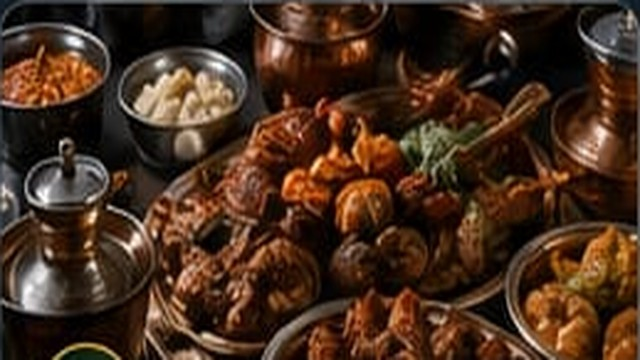
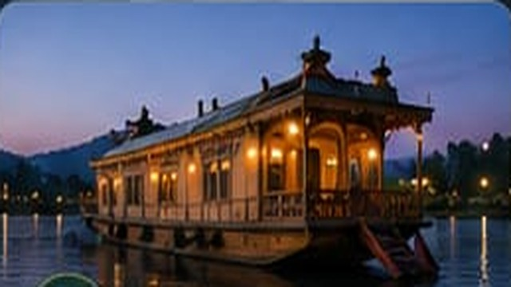

Skiing
Glide through Kashmir's snow-covered slopes and feel the thrill.
Live Kashmir, your way
For those who want Kashmir at full intensity.
Glide through Kashmir's snow-covered slopes and feel the thrill.

Walk through alpine trails, meadows, forests and vast views.

Enjoy a peaceful day by Kashmir's pristine rivers and streams.

Ride through rushing mountain waters and feel the adventure.

Sleep beneath a sky full of stars surrounded by nature.
Meet Kashmir through its people, food and traditions.

Experience Kashmir's iconic royal cuisine through a traditional feast.

Learn the secrets behind beloved Kashmiri dishes from local hosts.

Spend time with local families and experience a slower way of life.

Meet local artisans and discover the craft behind Kashmir's treasures.
Slow down. Look closer. Feel Kashmir.

Escape city lights under a spectacular Himalayan night sky.

Explore breathtaking landscapes and capture your Kashmir story.

Walk through orchards and pick fresh apples straight from the trees.

Discover Kashmir's rich birdlife across its forests and meadows.
For moments meant to be remembered together.

Drift across Dal Lake as the mountains turn golden around you.

Enjoy an intimate Kashmir-inspired dining experience.

Turn your Kashmir journey into timeless photographs.
Add experiences to your Walpakh trip planner and create memories that last a lifetime.